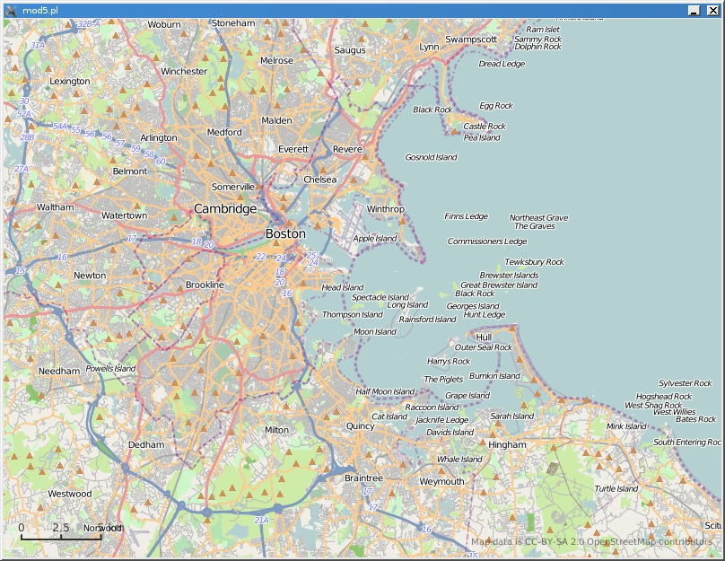

The jolly old elf's a big fan of open source and open data, but traditionally mapping gadgets have all been proprietary. Therefore his IT elves have been keeping an eye on projects like OpenStreetMap. They were recently pleased to discover Champlain, thin Perl bindings to libchamplain. libchamplain is a library for accessing Free data from OSM and other projects.
Installing the module was a little hairy though, since dependencies on Clutter, ExtUtils::Depends, and ExtUtils::PkgConfig are not declared, and the version of libchamplain shipping with Xm/OS is too old for the module, even though it uses an oudated verson itself. As noted in the POD, the A[BP]I of the library is not yet set, so the specific version used by the developer—0.5—is required. Once the dependencies were installed though, the module built successfully and the elves were quickly able to display a map, putting them on their way to creating a new GPS platform for the boss.

1 use Clutter '-init'; 2 use Champlain; 3 4 # Create the canvas 5 my $stage = Clutter::Stage->get_default(); 6 $stage->add(my $map = Champlain::View->new); 7 $_->set_size(800, 600) foreach $map, $stage; 8 $map->set_scroll_mode(CHAMPLAIN_SCROLL_MODE_KINETIC); #w/ inertia 9 $map->set_show_scale(1); 10 11 # Pin the tail on the donkey 12 $map->set_zoom_level(11); 13 $map->center_on(42.33, -71); 14 15 # Reveal the results 16 $stage->show_all(); 17 Clutter->main();